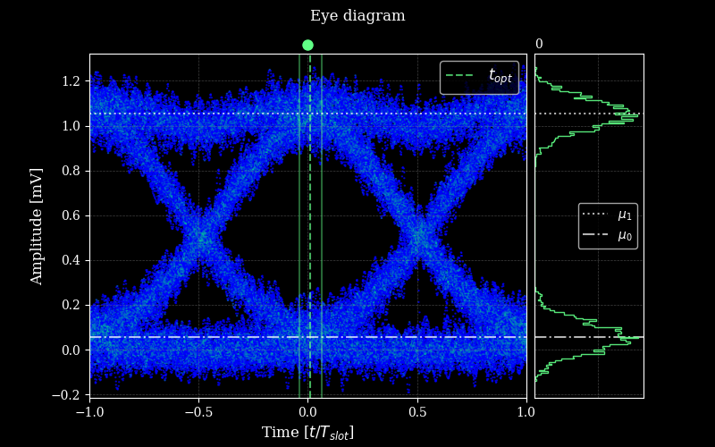

opticomlib.devices.GET_EYE
- opticomlib.devices.GET_EYE(input: electrical_signal | optical_signal, nslots: int = 4096, sps_resamp: int | None = None)[source]
Get Eye Params.
Estimates all the fundamental parameters and metrics of the eye diagram of the input electrical signal.
- Parameters:
input (electrical_signal | optical_signal) – Electrical or optical signal from which the eye diagram will be estimated.
nslots (int, Optional) – Number of slots to consider for eye reconstruction (default: 4096).
sps_resamp (int, Optional) – Number of samples per slot to interpolate de original signal (default: None).
- Returns:
Object of the Eye class with all the parameters and metrics of the eye diagram.
- Return type:
Example
>>> from opticomlib.typing import gv >>> from opticomlib.devices import PRBS, DAC, GET_EYE >>> >>> import numpy as np >>> >>> gv(N = 10, sps=64, R=1e9) >>> >>> y = DAC( PRBS(), pulse_shape='gaussian') >>> y.noise = np.random.normal(0, 0.05, y.len()) >>> >>> GET_EYE(y, sps_resamp=512).plot() # without interpolation